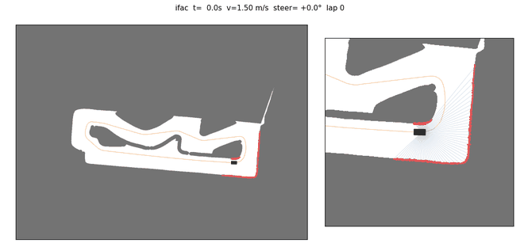
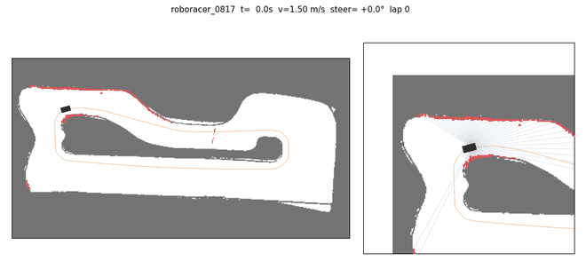
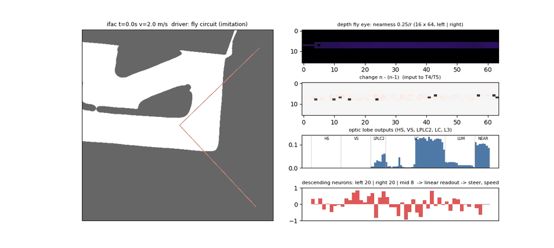
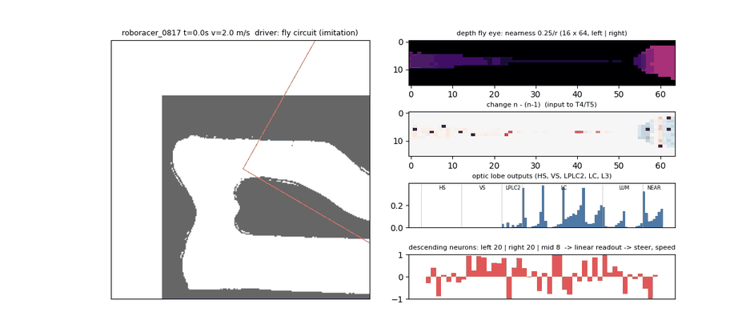

F1TENTH / ROBORACER 2026 · 아주대
지도 없이 달리는
강화학습 자율주행
1/10 크기 레이싱카가 SLAM·위치추정 없이, 센서 입력에서 바로 조향과 속도를 낸다. LiDAR 정책과, depth 카메라 한 대 + 초파리 시각계를 본뜬 회로 정책 두 가지를 만들었다.
강화학습 SACasymmetric actor-critic모방학습 DAgger시뮬레이터 직접 구현ROS2 · Jetson
01
LiDAR 강화학습
- 센서
- LiDAR + IMU + 속도, 40 Hz
- 정책
- 1D CNN + MLP
- 결과
- 팀 트랙 3바퀴 무사고 9.63 초 (시뮬)
02
depth 카메라 + 초파리 커넥톰
- 센서
- depth 카메라 한 대, 30 Hz
- 정책
- 초파리 시각 회로 (학습 값 약 760개)
- 결과
- 모방학습만으로 ifac 12.8 초 (시뮬, 진행 중)
01
맵 없이 LiDAR 만으로 달리는 강화학습
LiDAR·IMU·속도만 보고 40 Hz 로 조향·속도를 낸다. 학습할 때만 critic 이 레이싱라인을 보고(asymmetric actor-critic), 실차에 올라가는 actor 는 센서만 본다 — 빠른 라인을 배우지만 실차에는 지도가 필요 없다.
9.63초
팀 트랙 3바퀴 무사고, 출발 4곳 모두 (라인 이론 10.0 초)
10.9초
ifac 최고 랩 (pure pursuit 11.5 초, Follow-the-Gap 18.0 초)
1.1ms
torch 없이 numpy 추론, 틱당


구조
LiDAR 최근 4스캔 (1125빔, 10 m) ── 1D CNN (프레임마다 같은 가중치) ──┐ IMU 요레이트 · 속도 · 직전 명령 ────── FC ───────────────────────────┴─▶ MLP ─▶ 조향, 속도 2~5 m/s 학습할 때만: critic 이 레이싱라인 오차·곡률·목표 속도, 앞 장애물 위치를 추가로 봄
시뮬레이터도 직접 만들었다: 단일 트랙 차량 모델(RK4), 서보·구동 지연, 브레이크 없는 타력 감속, 횡가속 한계, LiDAR 레이캐스팅·잡음·누락, IMU·속도 주기, 계산 지연, 랜덤 장애물.
부딪힌 문제와 해결
문제학습 5 steps/s — 100만 스텝에 50시간
해결LiDAR 그림 그리기를 조회표로, 1D CNN 채널·stride 조정 → 연산 1/6, 35 steps/s
문제43만 스텝에 좁은 트랙을 전부 실패
해결넓은 F1 서킷 위주 학습이 원인 → 맵 가중치(좁은 3 : 넓은 1)와 벽 여유 보상
문제이어 학습 직후 정책 붕괴 (에피소드 837 → 114)
해결빈 버퍼를 무작위 행동으로 채우던 것 → 불러온 정책으로 채우기
문제코랩이 끊기면 모델 파일이 깨짐
해결임시 파일 저장 → 검증 → 교체 (원자적 저장), 깨진 파일은 건너뛰고 이어 학습
02
depth 카메라 한 대 + 초파리 시각 회로
LiDAR 없이 depth 카메라(Orbbec Gemini 2L) 한 대가 본 것을, 초파리 시각계를 본뜬 회로에 넣어 바로 조향·속도를 낸다. CNN·MLP 없음.
760개
실제로 쓰이는 학습 값 (LiDAR 정책은 10만 개 이상)
12.8초
ifac, 모방학습만으로 (선생님 pure pursuit 14.1 초)
5/8
출발 위치 8곳 중 3바퀴 무사고 완주 (장애물 없이)


왜 이렇게
- 왜 RGB 가 아니라 depth트랙 경계·장애물 색이 정해져 있지 않다. depth 는 거리만 재서 색과 무관하고, 카메라 칩이 계산해 Jetson 부담이 거의 없다.
- 하는 일이 같다초파리 시각계는 빠르게 날며 벽·장애물을 피하고 코스를 유지하도록 진화했다. 회전 감지(HS), 다가오는 물체 감지(LPLC2) 회로가 이미 있다.
- 작고 빠르다학습 값 약 760개, Jetson CPU 에서 프레임당 수 ms. GPU 가 필요 없다.
- 들여다볼 수 있다어느 뉴런이 왜 켜져서 왼쪽으로 꺾었는지 볼 수 있다. 연결 구조는 고정하고 세기만 학습한다.
구조
depth (30 fps) ─▶ 파리 눈 격자 16×64 '가까움' = 0.25 m / 거리 (바닥 제거, 정면·지평선에 칸 집중) × 최근 3프레임 ─▶ lamina ON/OFF 시간 변화 + 대비 적응 ─▶ T4/T5 움직임 방향 검출 (좌·우·상·하) ─▶ HS/VS 흐름 · LPLC2 다가옴 · LC 가장자리 · L3 가까움 = 96 ─▶ 하행 뉴런 48 (좌우 20쌍 거울상 + 가운데 8, 같은 쪽 흥분 · 반대쪽 억제) ─▶ 선형 읽기 ─▶ 조향, 속도
과정에서 찾은 문제와 해결
문제처음부터 강화학습 → 10만 스텝에도 첫 코너에서 충돌
해결회로 극성을 시뮬 장면 11개로 전수 검사. 다가옴 감지가 2 m 밖에서 거꾸로 동작, 하행 뉴런 부호가 랜덤이었던 것 발견 → 가까움 증가율로 다시 계산, 좌우 대칭 배선
문제모방학습 검증 손실은 낮은데 혼자 몰면 바로 충돌
해결'직전 명령'을 보고 방금 행동을 반복하는 것만 배움 (copycat 문제) → 모방학습 동안 그 입력 차단, DAgger 로 학생이 벗어난 상황도 학습
문제모방학습 → 강화학습으로 넘기자 8초마다 충돌, 엔트로피 계수 폭주
해결행동 잡음 σ 0.2 에서 같은 정책이 226 스텝 만에 충돌하는 것을 시뮬로 확인 → σ 0.1, 목표 엔트로피 −3.5, 처음 3만 스텝은 critic 만 학습
실제 초파리 연결 데이터가 아니라 알려진 세포 유형·연결 원칙을 따른 합성 회로이고, 결과는 모두 시뮬레이션이다. 장애물 회피는 강화학습으로 학습 중이며, 카메라가 오면 실제 덕트를 찍어 시뮬 센서 모델을 보정할 계획이다.